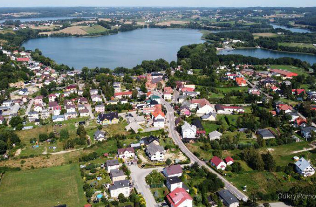

Najbliższe wydarzenia
Koncert jesienny
12 października
Koncert lokalnych artystów.
Warsztaty plastyczne
18 października
Zajęcia dla dzieci rozwijające kreatywność.
Wieczór teatralny
25 października
Spotkanie z teatrem i lokalnymi artystami.
O Nas

GOKSiR w Chmielnie to miejsce, w którym kultura spotyka się z ludźmi.
Tworzymy przestrzeń otwartą dla mieszkańców i wszystkich, którzy chcą aktywnie uczestniczyć w życiu naszej gminy. Organizujemy wydarzenia kulturalne, koncerty, warsztaty, zajęcia oraz różnorodne inicjatywy dla dzieci, młodzieży, dorosłych i seniorów.
Ważną częścią naszej działalności jest promowanie kaszubskiej kultury i lokalnych tradycji. Jednocześnie jesteśmy otwarci na nowe pomysły, współczesną kulturę i działania, które odpowiadają na potrzeby mieszkańców.
Wspieramy lokalnych twórców, zespoły i pasjonatów, dając im możliwość rozwijania swoich talentów i prezentowania ich szerszej publiczności.
Chcemy, aby GOKSiR był miejscem, do którego chce się wracać – na wydarzenie, zajęcia, spotkanie czy po prostu dobrą chwilę razem.